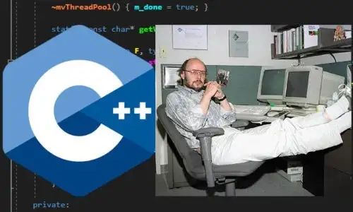
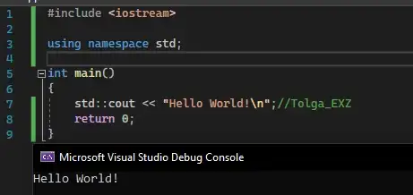

Tarihçesi
C++ Dili Bell Laboratuvarlarından Bjarne Stroustrup tarafından 1979 yılından itibaren geliştirilmeye başlanmış, C’yi kapsayan ancak çok daha kapsamlı, Nesneye yönelik yaygın olarak kullanılan bir programla dilidir. İlk ismi C With Classes (yani Sınıflarla C) olarak adlandırılmış ancak 1983 yılında ismi C++ olarak değiştirilmiştir. C++ dilinin ismi C++ olduğunda, C’nin sonuna eklenen “++“, C dilinde bir artırma operatörü olarak kullanıldığı için C’nin bir üstü gibi bir anlam ortaya çıkarılmaya çalışılmıştır. 1998 yılında ise ISO, C++ dilini uluslararası standart olarak C++ ISO/IEC 14882:1998 kod adıyla yayınladı. Bu standart resmi olmayarak C++98 olarak adlandırıldı. C++ dilinin esas güç kaynağı Standart Şablon Kütüphanesi 1979 yılından beri geliştirilmekteydi. Bu kütüphane kısaca programlama dillerinde bulunan temel veri yapılarını ve algoritmaları bulunduruyordu. Bu kütüphane programcılar için büyük bir kolaylık sağlayıp Her sene geliştirmeye ve yeni algoritmalar eklenmeye devam etti. Daha henüz C++ dilinin ismi Sınıflarla C iken Cfront adı verilen derleyici ile C++ programlarının derlenmesi yapılıyordu. Fakat bu derleyicinin yaptığı tek şey C++ kodlarını C diline çevirerek derlenmesini sağlamaktı. C++ diline yeni özellikler eklendikçe daha karmaşık bir implementasyona sahip olmaya başladı bunun üzerine hata yakalama (exception handling) mekanizmasıda eklenmeye çalışılınca ortaya bir kaos çıktı ve bu nedenle 1993 yılında hata yakalama üzerinde yapılan çalışmalara son verildi. Buna rağmen bu derleyici birçok derleyiciye ve Unix işletim sistemi üzerinde geliştirmelere katkı sağladı
Bjarne Stroustrup
Bjarne Stroustrup C++ programlama dilini yaratan ve geliştirmesiyle bilinen Danimarkalı bir bilgisayar bilimcisidir. 1969–1975 yılları arasında Aarhus Üniversitesi’nde kalan Stroustrup, matematik ve bilgisayar bilimleri bölümünden mezun oldu. “The C++ Programming Language” (C++ Programlama Dili) adındaki, C++ dilinin tanıtıldığı, 19’dan fazla dilde çevirisi yapılan kitabı ile de büyük bir başarı elde etmiştir.
Neden C++ Öğrenmeliyim ve neden C++ öğrenmek önemli?
Çoğu profesyonel program C++ kullanır ancak C++ kolay hakim olunabilen bir dil değildir. Öğrenmesi zaman ister ve sisteminizle ilgili her detaya hakim olmanız gerekmektedir. Diğer dillerdeki gibi hafıza yönetimi burada otomatik olarak yönetilmez Sizin manuel olarak yapmanız gerekir. Ayrıca esnek bir dil olduğu için hataları bulmak kolay olmaz. Bu yüzden günümüz yazılımcıları için pek tercih edilen bir dil değildir. Ancak neden öğrenmemiz gerektiğini ve ne kadar işlevsel bir dil olduğuna bakalım.
C++, C#, Java, D, PHP, JavaScript, Perl, Go, Objective-C ve Swift gibi diller C syntax yazım stilini baz alırlar. Yani C bu dillerin babasıdır. C´yi bilen birisi bu dilleri çok daha rahat öğrenebilir ve ortama çok daha kolay adapte olabilir.
Modern işletim sistemlerinin neredeyse tümü ağırlıklı olarak C ve C++ kullanılarak yazılmışlardır. Windows, MacOS, GNU/Linux ve BSD´lerde de C ve C++ kullanılmıştır.
Frostbite, IW engine, Unreal Engine ve id Tech gibi üst düzey oyun motorları C ve C++ kullanmaktadırlar. Call of Duty (IW engine), Battlefield (Frostbite), PUBG (Unreal Engine), ve Doom Eternal (id Tech) kullanan büyük oyunlar. Java ve Python gibi dillerde bu kadar büyük oyunlar çıkmıyor. Java ile yazılan Minecraft istisna olabilir ancak o da kendine has grafikleri ve oyun yapısıyla yukarıdaki diğer oyunlarla kıyaslanamaz.
IoT cihazları, gömülü sistemler ve robotik programlama gibi masaüstü bilgisayar yazılımları dışındaki alanlarda da kullanıma uygun dillerdir ve bu alanlarda da yaygın bir şekilde kullanılıyorlar. Bunların dışında grafik arayüzleri (GUI), derleyici geliştirme, gelişmiş düzeyde matematiksel grafik ve hesaplamalarda ayrıca sık sık kullanılır.
Kısacası C dil ailesi büyük bir ailedir. Bilgisayar bilimlerinin merkezinde duran bir dil ailesidir. Nerede yazılım ile ilgili bir iş ilanı varsa mutlaka uzaktan ya da yakında C ya da aynı aileden başka bir dilin alakası vardır. Bu yüzden C ve C++´ı öğrenmek oldukça önemlidir.
Hello World!
Hello World örneği bir çok yazılıma yeni başlayan kişinin karşısına çıkan bir örnektir. Hello World veya Merhaba Dünya olarak tanınan bu örnek ilk olarak Dennis Ritchie ve Brian Kernighan tarafından C programlama dili kitabında kullanılmıştır. Daha sonra örnek o kadar kabul görmüş ve sevilmiştir ki günümüze kadar gelmiştir. Kullanımı aşağıdaki gösterdiğim şekildedir.
#include
# ile başlayan emir kodları, bir kaynak dosyasının programa dahil edilmesini sağlamaktadır. Bu dosyalara başlık dosyaları denir. Programlama içerisinde bazı işlevleri kullanabilmek için başlık dosyalarını işlevlerine göre programa dahil etmek (include etmek) gerekir. iostream (standart giriş-çıkış kütüphanesi) kullanmadığımız taktirde program cout ifadesini kullanmamıza izin vermeyecektir.
int main( ){}
Her c++ programı çalışması için bir main fonksiyonu kullanması gerekmektedir. Main fonksiyonu, tüm C++ kodlarının çalıştırılmaya başladığı noktadır. Main’den önce gelen ifade fonksiyonun döndüreceği değerin türünü belirler. (float, boolean string gibi)
cout << “Hello World!”;
“Hello World!” ifadesini çıktı olarak almak için kullanılan ifadedir. Başka bir şey yazmak için “” arasına başka bir şey yazılmalıdır. Ayrıca bir işlemin bittiğini belirtmek için ; kullanılır eğer kullanılmazsa program derlenmez ve hata verir. using namespace std; ifadesini kullanmasaydık std::cout yazmamız gerekirdi. Bu ifade tüm açık namespacelerin başlıklarını otomatik olarak kullanmamızı sağlar.
return 0
return fonksiyonu, programın bitişinde kullandığımız bir ifadedir. Fonksiyonun döndüreceği değeri ifade eder. Biz int kullandığımız için fonksiyonu sayı olarak döndürmemiz gerekmektedir.
 Bizden hiçbir blog kaçırmayın, haftalık güncellemeleri gelen kutunuzda görüntüleyin.Kabul Et
Bizden hiçbir blog kaçırmayın, haftalık güncellemeleri gelen kutunuzda görüntüleyin.Kabul Et